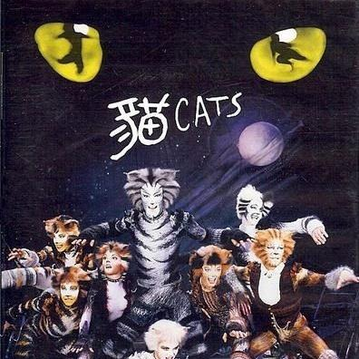

黃子桐 ALEX
世新大學資傳一乙班級代表，資深18年地球ONLINE玩家
我是黃子桐，來自金門，目前就讀於世新大學資訊傳播學系一年乙班且目前就任班級代表。同時，我喜歡看音樂劇，例如：《貓》、《歌劇魅影》及《漢密爾頓》。除此之外，我也對電子遊戲、動漫和VTuber頗感興趣。藉由二次元文化我對日本很感興趣，希望可以更多、更深得了解信仰、社會等文化。
網絡直播運營課講述了，大部分類型的直播所需設備，人力等調配，以及所需特質。且不只是讓我們了解，更拿來設備讓我們熟悉操作。這樣一來，無論是後續想要走直播路線，或想要當幕後人員都更容易上手
| 公司 | 好感度 | 分數 | 評論 |
|---|---|---|---|
| YAYOI彌生軒 | 夯 | 同事跟環境都很好，一個不錯的新手村 | |
| Joyfull TW 台灣珍有福 | 拉 | 僅針對個別分店，店長人很好，但其餘人不太好說，這邊給到拉完了:> |
《歌劇魅影》是由安德魯·洛伊·韋伯作曲，劇本根據法國偵探小說家卡斯頓·勒胡所撰著的愛情驚悚小說《歌劇魅影》改編。我觀看的場次位於台北表演藝術中心，同時也是我第一次進入這個由知名外過設計師設計的建築。說實話因為內部場地不大的原因觀感很差，但仍然可以聆聽演員自靈魂深處的歌唱，直到結束時仍然在腦中迴響。

《貓》是由作曲家安德魯·洛伊·韋伯根據T·S·艾略特的詩集《老負鼠的貓經》及其他詩歌所編寫的一部音樂劇。其作為在百老匯裡公演最久的音樂劇直到《歌劇魅影》的出現。這是我第一部現場觀看的音樂劇，它的每個角色的塑造的十分成功，故事沒有主線，而是由每隻貓咪的故事交織而成。
《漢密爾頓》由林-曼努爾·米蘭達創作的關於美國開國元勳亞歷山大·漢彌爾頓的通唱音樂劇，由同一人編劇、作曲及填詞。這部音樂劇是我通過高中的音樂老師認識的，對此我十分感激。《漢密爾頓》描述了美國國父的生平，從獨立戰爭至早期法案皆有其身影。
This is a wider card with supporting text below as a natural lead-in to additional content. This content is a little bit longer.
Last updated 3 mins ago
This card has supporting text below as a natural lead-in to additional content.
Last updated 3 mins ago
This is a wider card with supporting text below as a natural lead-in to additional content. This card has even longer content than the first to show that equal height action.
Last updated 3 mins ago